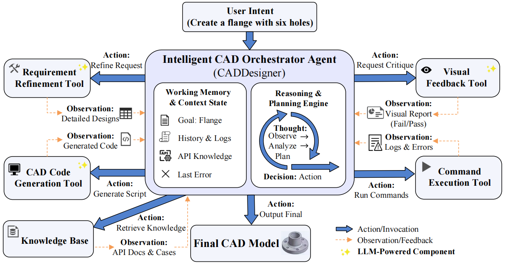

Computer-Aided Design (CAD) is widely used for conceptual design and parametric 3D modeling, but typically requires a high level of expertise from designers. To lower the entry barrier and facilitate early-stage CAD modeling, we present CADDesigner, an LLM-powered agent for conceptual CAD design. The agent accepts both textual descriptions and sketches as input, engaging in interactive dialogue with users to refine and clarify design requirements through comprehensive requirement analysis. Built upon a novel Explicit Context Imperative Paradigm (ECIP), the agent generates high-quality CAD modeling code. During the generation process, the agent incorporates iterative visual feedback to improve model quality. Generated design cases can be stored in a structured knowledge base, providing a mechanism for continual knowledge accumulation and future improvement of code generation. Experimental results show that CADDesigner achieves competitive performance and outperforms representative baselines on conceptual CAD model generation tasks.

CADDesigner follows a ReAct-style agent workflow for conceptual CAD modeling. It first refines text or sketch-text input into detailed design requirements, then generates executable CAD modeling code with the Explicit Context Imperative Paradigm (ECIP), which makes modeling context and operation state explicit. After execution, the agent checks symbolic logs and rendered visual feedback, revises the code when inconsistencies are found, and stores successful cases in a structured knowledge base for future generation.
If you find this work useful, please cite:
@article{fan2025caddesigner,
author = {Fengxiao Fan and Jingzhe Ni and Xiaolong Yin and Sirui Wang and Xingyu Lu and Qiang Zou and Ruofeng Tong and Min Tang and Peng Du},
title = {{CADDesigner}: Conceptual CAD Model Generation with a General-Purpose Agent},
journal = {arXiv preprint arXiv:2508.01031},
year = {2025}
}This work was supported by the Leading Goose R& D Program of Zhejiang under Grant No. 2024C01103.